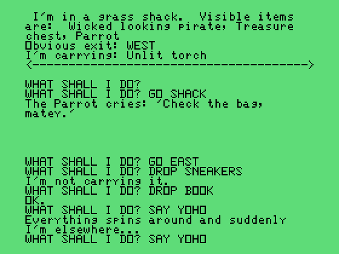

<filter>,
<feTurbulence>, and
<feDisplacementMap>. This is made to work with
html-to-movie. To see it live, type animate() in the JavaScript
console.
Testing. See https://www.youtube.com/watch?v=fh6c4EYawgY:
More testing. See https://x.com/i/grok/share/nByCaTJTMP2tvDYuMvX9T1Xot: